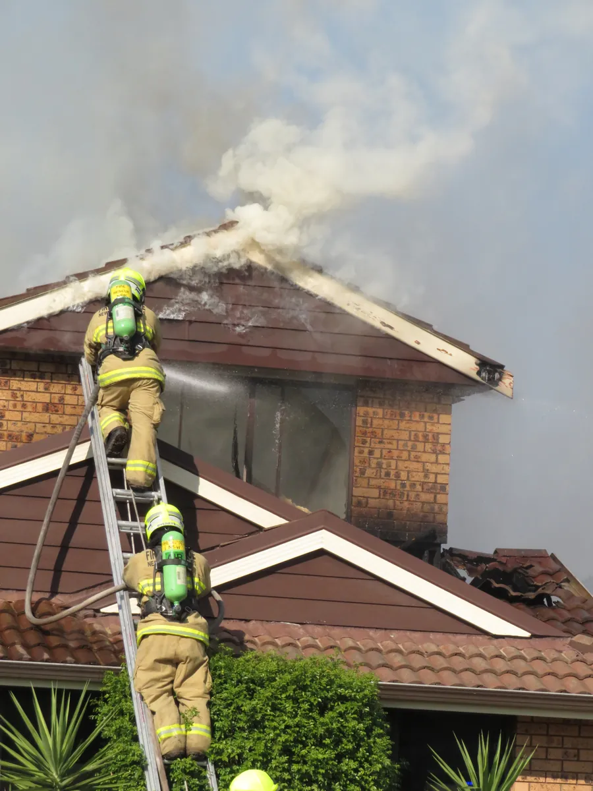

Home · Services · About · Contact · Reviews
A fire doesn't wait. Neither do we. One call connects you with a local certified fire damage restoration professional — 24 hours a day, 7 days a week, anywhere in the USA.

Five service groups cover everything a fire leaves behind — from the first emergency board-up to the last trace of smoke odor. Tap any service to learn what it covers and what it typically costs.
Board-up, roof tarping, water extraction and property securing — the first hours after a fire.
Soot removal, wall and ceiling cleaning, HVAC duct cleaning and smoke residue removal.
Thermal fogging, ozone treatment, kitchen fire odor and wildfire smoke odor removal.
Pack-out and storage, electronics cleaning, clothing and textiles, document restoration.
Kitchen, apartment, commercial and wildfire restoration — matched to your property.
94% of restoration calls happen within 4 hours of the incident (theseodoctors.com). Here is what the first two days look like — and why speed matters.
📞 Start Now — Call (800) 555-0147
Answer a few questions about your home and the damage, and get an instant typical cost range — built from published national averages (Angi, Sep 2026) and our per-service ranges. No email, no form — just the numbers.
The calculator is part of Phase 2 and launches soon — the link above will go live with it.
The big national brands — SERVPRO (2,340+ locations, founded 1967), BELFOR (founded 1946), ServiceMaster Restore (roots 1929) — are strong on brand and thin on cities. Their city pages are franchise templates with little local detail. Here is how [Brand] compares:
| What matters | [Brand] | National chains |
|---|---|---|
| Local certified pros, available 24/7 | ✓ Yes | Varies by franchise |
| Real price ranges published on the site | ✓ Yes | Usually not published |
| Hyper-local city pages with local detail | ✓ Yes | Franchise templates, little local detail |
| Insurance claim documentation help | ✓ Yes | Varies by location |
| One call connects you to a local pro | ✓ Yes | Varies by franchise |
| Sticky mobile click-to-call on every page | ✓ Yes | Often form-first |
We serve homeowners nationwide, starting in Texas and expanding to the highest-demand states next.
Texas (launching first): Texas fire damage restoration →
Coming next: Florida · Illinois · Arizona · California
See all services: Fire damage restoration services →
The national average is $27,477, with a typical range of $3,083–$52,031, or $4–$7 per sq ft (Angi, Sep 2026). Your exact cost depends on the size of your home and the extent of the damage — call for a free assessment and a flat scope before any work begins.
We dispatch 24/7. Emergency board-up and securing are usually same-day, and 94% of restoration calls happen within 4 hours of the incident (theseodoctors.com). Call now and we will tell you the earliest available time.
Most standard homeowner policies cover sudden and accidental fire damage, including smoke damage and water damage from firefighting. Coverage depends on your policy — call us before cleanup begins so the damage is documented for your claim.
If there is an active fire, call 911 first. Do not re-enter until the fire department clears the property. Then call us: we secure the property, document the damage with photos, and help you contact your insurer.
Both. We handle soot removal, wall and ceiling cleaning, HVAC duct cleaning, and odor removal with thermal fogging and ozone treatment. Smoke odor hides in porous materials and ductwork — airing the house out alone rarely removes it.
Soot sets deeper and odor bonds harder with every hour. Call now for 24/7 emergency dispatch — we secure, clean, and help document everything for your insurance claim.
📞 Call (800) 555-0147 Now